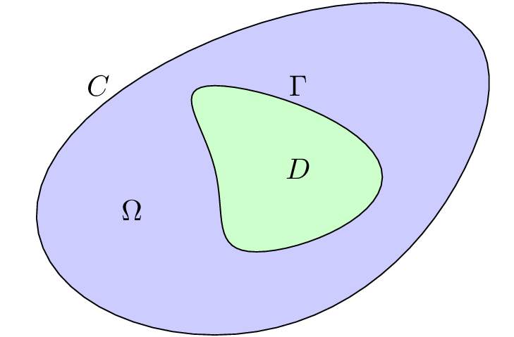

Gebietserkennung
Aufgabenstellung

homogenes Gebiet $\Omega$
unbekannte innere Inhomogenität $D$
Rekonstruktion des Randes $\Gamma$ von $D$
Messdaten nur auf äußerem Rand $C$
angelegte Spannung $f$
gemessener Strom $g$
Mathematische Formulierung
\begin{align*} \Delta u &= 0 \qquad\text{auf $\Omega \setminus D$} \\ u|_{\Gamma} &= 0 \\ u|_{C} &= f \\ {\tfrac{\partial u}{\partial \nu}}|_{C} &= g \end{align*}
Das Randwertproblem
\begin{align*} \Delta u &= 0 \qquad\text{auf $\Omega \setminus D$} \\ \end{align*}
Dirichlet-Bedingungen: $u|_{\Gamma},\, u|_C$
Neumann-Bedingungen: $\frac{\partial u}{\partial \nu}|_{\Gamma},\, \frac{\partial u}{\partial \nu}|_{C}$
Lösbar, falls auf $\Gamma$ und $C$ jeweils eine Bedingung gegeben ist
Algorithmen
Löse $H(x) := F(x) - f = 0$ durch Minimierung der Fehlerquadrate
Gauß-Newton mit berechneter Jacobimatrix
fsolve
(Levenberg-Marquardt) mit finiten Differenzen
fsolve
(Levenberg-Marquardt) mit berechneter Jacobimatrix
Gauss-Newton
Minimiere \[ \|H(x)\|^2 \approx \|H(x_k) + H'(x_k)(x-x_k)\|^2 \]
$x_{k+1} := x_k - \Big( H'(x_k)^T H'(x_k) \Big)^{-1} H'(x_k)^T H(x_k)$
Levenberg-Marquardt
Minimiere statt $\|H(x)\|^2 \approx \|H(x_k) + H'(x_k)(x-x_k)\|^2$ die Summe \[ \|H(x_k) + H'(x_k)(x-x_k)\| + \mu \|x-x_k\|^2. \]
$x_{k+1} := x_k - \Big( H'(x_k)^T H'(x_k) + \mu I\Big)^{-1} H'(x_k)^T H(x_k)$
/